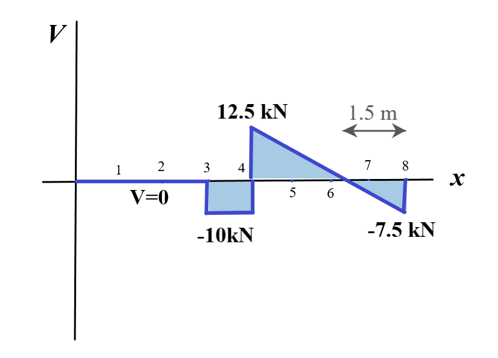

A hinge can transfer axial force and shear force but not bending moment. So, bending moment at the hinge location is zero. We divide the beam into two parts and find the external reaction forces using the method discussed in step 1. The next step is to assume that the beam is in the original state and to draw the shear force diagram as usual, ignoring the hinge.
The first step is to solve for the hinge reactions. The hinge reactions for the following beam are shown in the 2nd figure.
The axial force is zero throughout since there are no forces along the x direction
The shear force remains zero from A till it reaches the 3m mark (where the 10 kN force acts).
From this point till C, the shear force V= -10 kN. At C, the 22.5 kN force acts in the positive y direction. Thus, at C, the value of V = + 12.5 kN.
At C, the ditributed load (5 kN/m) starts acting and from C to D, the value of V = 12.5kN - 5(x-4) where x is the distance from A
Thus, the shear force diagram for the given beam is:
Now, let's solve a problem by applying what we have learnt here: